3rd Grade
4th Grade
5th Grade
Grade: 3rd
Progresso: 1 / 1
Palavra atual
—
Palavra anterior
Próxima palavra
Reiniciar digitado
Digite as letras conforme o aluno soletrar
As letras aparecerão instantaneamente no telão, com verde/vermelho por acerto/erro.